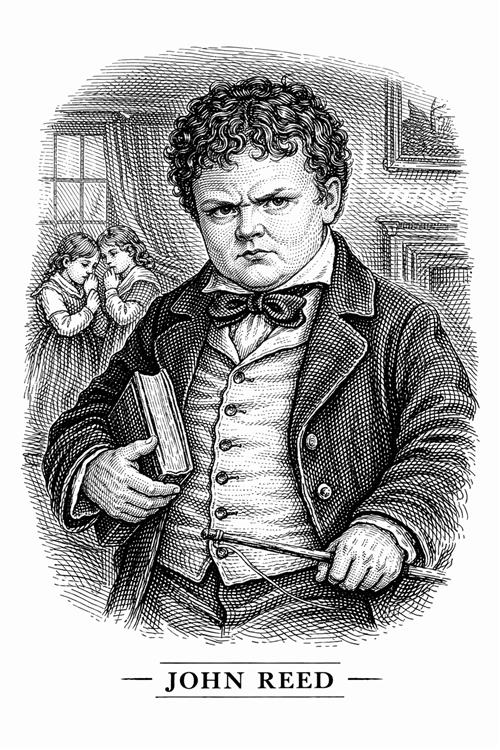

John Reed

John es el primo mayor de Jane y heredero de la fortuna de los Reed. Se le describe como un chico corpulento para su edad, con una salud descuidada y un carácter violento que nadie en la familia se atreve a frenar.
Personalidad e impacto en la vida de Jane
El chico es la definición de acosador. Es cruel, comilón y aire de superioridad por el simple hecho de ser hombre y ser rico. No tiene nada de empatía y disfruta maltratando tanto física como psicológicamente a todo aquel que considere inferior, en especial a su prima Jane.
Es el causante de muchos conflictos, como la pelea del primer capítulo cuando le lanza un libro a su prima a la cabeza o cuando provoca que Jane sea encerrada en el cuarto rojo, el cual le provoca un ataque de nervios. Este hecho marca a Jane profundamente, ya que es la primera vez que se rebela contra la injusticia y se da cuenta de que no puede permitir que la traten así.
John le recuerda constantemente a su prima que es una extraña en su propia familia, no para de recordarle que es una mantenida sin dinero que vive de la caridad de la señora Reed. Es una personificación del rechazo que sufre Jane por ser huérfana.
Jane lucha por ser mejor, cultivarse y educarse, mientras que él lucha por autodestruirse.
Importancia del personaje
Su historia es la que peor termina, siendo este un acto de justicia poética. Mientras que Jane busca construir una vida con respeto, él gasta toda la fortuna familiar en apuestas y alcohol. Termina en la cárcel y se quita la vida.
Se puede decir que él es el que mata a su madre, que sufre de estrés por todas las deudas que va generando su hijo. Lo ha malcriado y permitido, convirtiéndolo en un ser incontrolable.
John cree que el mundo le pertenece por derecho de nacimiento, mientras que su prima tiene que ir ganándoselo poco a poco. El que creía tenerlo todo en la vida acaba sin nada, mientras que Jane, que no tenía nada, acaba teniendo una vida plena.